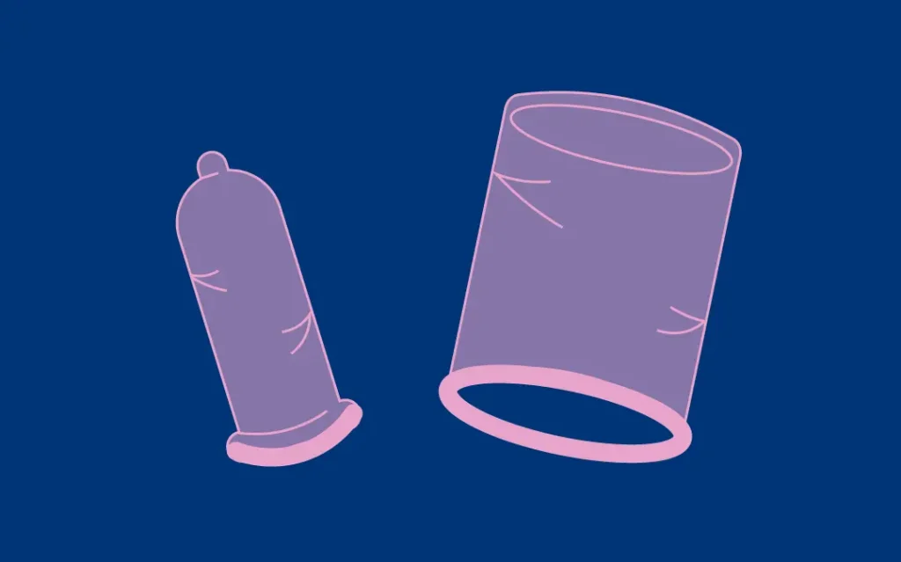

<!DOCTYPE html>
<html lang="pt-br"></html>
<head>
    <meta charset="UTF-8">
    <meta http-equiv="X-UA-Compatible" content="IE=edge">
    <meta name="viewport" content="width=device-width, initial-scale=1.0">
    <link rel="stylesheet" href="style.css">
    <!--box icons-->
    <link href='https://unpkg.com/boxicons@2.1.4/css/boxicons.min.css' rel='stylesheet'>
    <title>Página de Post</title>

</head>
<body>
    <!--Cabeçalho-->
    <header>
        <!--Navegação-->
        <div class="nav container">
        <!--Logo-->
        <a href="index.html" class="logo">Loucos por <span>pontos</span></a>
        <!--Botão de Login-->
        <a href="index.html" class="login">Início</a>
        </div>
    </header>

    <!--Conteúdo do Post-->
    <section class="post-cabecalho">
        <div class="conteudo-cabecalho post-container">
            <!--Voltar Para a Home-->
            <a href="index.html" class="voltar-home">Voltar para a Home</a>
            <!--Título-->
            <h1 class="cabecalho-titulo">Preservativos</h1><!--Falta alterar o título do cabeçalho-->
            <!--Imagem do Post-->
            
        </div>
    </section>

    <!--Posts-->
    <section class="post-conteudo post-container">
        <h2 class="sub-titulo">Por que usar o preservativo?</h2>
        <p class="post-texto">O preservativo, ou camisinha, é o método mais conhecido, acessível e eficaz para se prevenir da infecção pelo HIV e outras infecções sexualmente transmissíveis (IST), como a sífilis, a gonorreia e também alguns tipos de hepatites. Além disso, ele evita uma gravidez não planejada.</p>
        <p class="post-texto">Existem dois tipos de camisinha(preservativo): a masculina, que é feita de látex e deve ser colocada no pênis ereto antes da penetração; e a feminina, que é feita de latex ou borracha nitrílica e é usada internamente na vagina, podendo ser colocada algumas horas antes da relação sexual, não sendo necessário aguardar a ereção do pênis.</p>
        <h2 class="sub-titulo">Onde pegar os preservativos?</h2>
        <p class="post-texto">Os preservativos masculino e feminino são distribuídos gratuitamente em qualquer serviço público de saúde. Caso você não saiba onde retirá-los, ligue para o Disque Saúde (136). </p>
        <p class="post-texto">Saiba que a retirada gratuita de preservativo nas unidades de saúde é um direito seu; por isso, não devem ser impostas quaisquer barreiras ou condições para que você os obtenha. Retire quantos preservativos masculinos ou femininos você julgar que necessite.</p>
        
    </section>

    <!--Compartilhamento-->
    <div class="compartilhar post-container">
        <span class="compartilhar-titulo">Compartilhe esse artigo</span>
        <div class="social">
            <a href="https://www.instagram.com/infoweb_2022/" target=”_blank”><i class='bx bxl-instagram'></i></a>
            <a href="https://www.facebook.com/?locale=pt_BR" target=”_blank”><i class='bx bxl-facebook'></i></a>
        </div>
    </div>

    <section class="post-container">
        <p class="post-texto">Veja outros conteúdos sobre <a href="barreira.html">métodos de barreira, </a><a href="cirurgico.html">métodos cirurgico, <a href="hormonais.html">métodos hormonais</a> e </a><a href="comportamental.html">métodos comportamentais.</a></p>
    </section>
    
    <!--Rodapé-->
    <div class="rodape container">
        <p>Copyright &#169 2024.</p>
        <div class="social">
            <a href="https://www.instagram.com/infoweb_2022/" target=”_blank”><i class='bx bxl-instagram'></i></a>
            <a href="https://www.facebook.com/?locale=pt_BR" target=”_blank”><i class='bx bxl-facebook'></i></a>
        </div>
    </div>

    <!--JQuary Link-->
    <script
  src="https://code.jquery.com/jquery-3.7.1.js"
  integrity="sha256-eKhayi8LEQwp4NKxN+CfCh+3qOVUtJn3QNZ0TciWLP4="
  crossorigin="anonymous"></script>
    <!--Link do JavaScript-->
    <script src="main.js">
    </script>
</body>
</html>